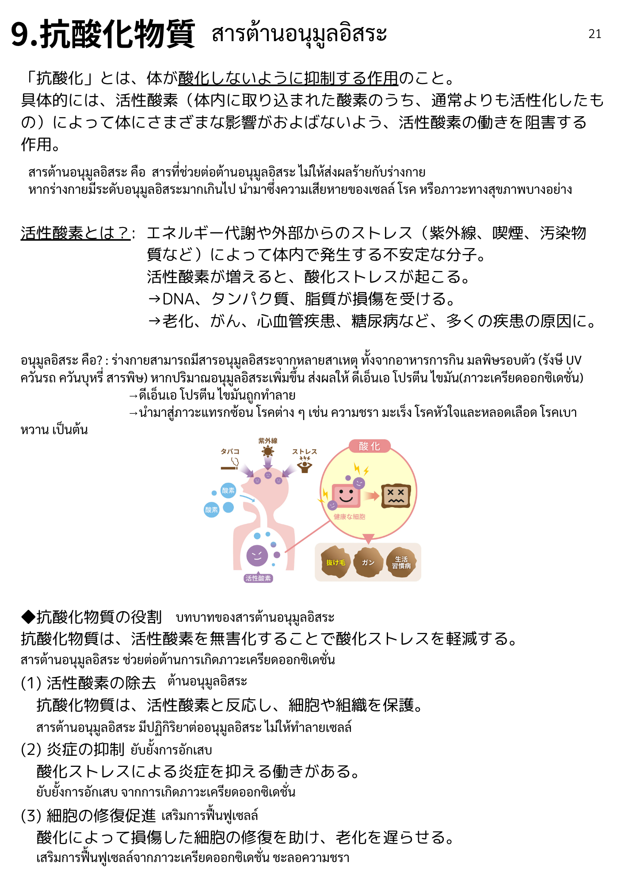
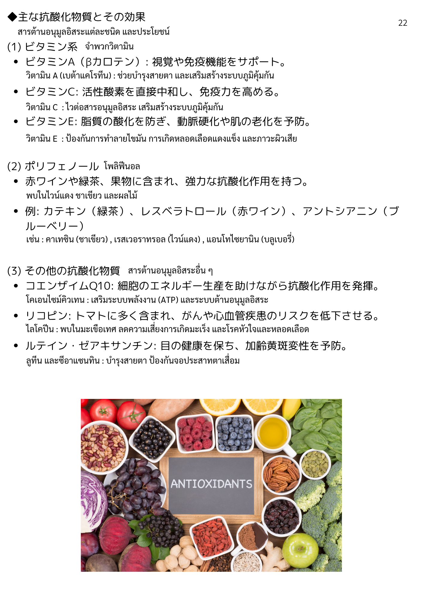
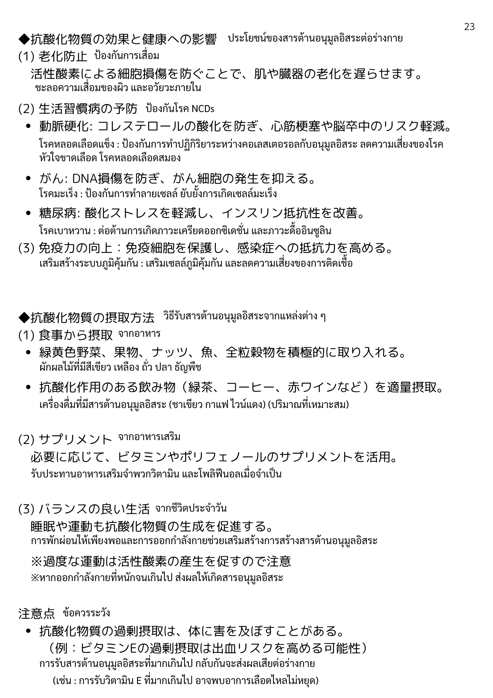

| 漢字 | ひらがな | ความหมาย (ไทย) |
|---|---|---|
| 抗酸化物質 | こうさんかぶっしつ | สารต้านอนุมูลอิสระ |
| 抗酸化 | こうさんか | การต้านอนุมูลอิสระ / ต้านออกซิเดชัน |
| 体 | からだ | ร่างกาย |
| 酸化 | さんか | การออกซิไดซ์ / ออกซิเดชัน |
| 抑制 | よくせい | การยับยั้ง / ควบคุม |
| 作用 | さよう | การออกฤทธิ์ / ผล |
| 具体的 | ぐたいてき | เป็นรูปธรรม / โดยเฉพาะ |
| 取り込まれる | とりこまれる | ถูกรับเข้ามา |
| 通常 | つうじょう | ปกติ / โดยทั่วไป |
| 活性化 | かっせいか | การกระตุ้น / เปิดการทำงาน |
| 阻害 | そがい | การขัดขวาง / ยับยั้ง |
| 漢字 | ひらがな | ความหมาย (ไทย) |
|---|---|---|
| 活性酸素 | かっせいさんそ | อนุมูลอิสระ (Reactive Oxygen Species) |
| 酸化ストレス | さんかすとれす | ความเครียดออกซิเดชัน |
| エネルギー代謝 | えねるぎーたいしゃ | การเผาผลาญพลังงาน |
| 外部 | がいぶ | ภายนอก |
| ストレス | すとれす | ความเครียด |
| 紫外線 | しがいせん | รังสียูวี (UV) |
| 喫煙 | きつえん | การสูบบุหรี่ |
| 汚染物質 | おせんぶっしつ | สารมลพิษ |
| 発生 | はっせい | การเกิดขึ้น |
| 不安定 | ふあんてい | ไม่เสถียร |
| 分子 | ぶんし | โมเลกุล |
| DNA | でぃーえぬえー | ดีเอ็นเอ |
| タンパク質 | たんぱくしつ | โปรตีน |
| 脂質 | ししつ | ไขมัน / ลิปิด |
| 損傷 | そんしょう | ความเสียหาย |
| 受ける | うける | ได้รับ |
| 漢字 | ひらがな | ความหมาย (ไทย) |
|---|---|---|
| 役割 | やくわり | บทบาท / หน้าที่ |
| 無害化 | むがいか | การทำให้ไม่เป็นอันตราย |
| 軽減 | けいげん | การลดลง / บรรเทา |
| 除去 | じょきょ | การกำจัด |
| 反応 | はんのう | ปฏิกิริยา |
| 細胞 | さいぼう | เซลล์ |
| 組織 | そしき | เนื้อเยื่อ |
| 保護 | ほご | การปกป้อง |
| 炎症 | えんしょう | การอักเสบ |
| 抑える | おさえる | ยับยั้ง / ควบคุม |
| 修復促進 | しゅうふくそくしん | การส่งเสริมการซ่อมแซม |
| 老化 | ろうか | ความชรา |
| 遅らせる | おくらせる | ทำให้ช้าลง / ชะลอ |
| 漢字 | ひらがな | ความหมาย (ไทย) |
|---|---|---|
| ビタミン系 | びたみんけい | กลุ่มวิตามิน |
| βカロテン | べーたかろてん | เบต้าแคโรทีน |
| 視覚 | しかく | การมองเห็น / สายตา |
| 免疫機能 | めんえききのう | ระบบภูมิคุ้มกัน |
| サポート | さぽーと | การสนับสนุน |
| 直接中和 | ちょくせつちゅうわ | การทำให้เป็นกลางโดยตรง |
| 高める | たかめる | เพิ่ม / ยกระดับ |
| 脂質の酸化 | ししつのさんか | การออกซิไดซ์ของไขมัน |
| 動脈硬化 | どうみゃくこうか | หลอดเลือดแดงแข็ง |
| 予防 | よぼう | การป้องกัน |
| ポリフェノール | ぽりふぇのーる | โพลีฟีนอล |
| 赤ワイン | あかわいん | ไวน์แดง |
| 緑茶 | りょくちゃ | ชาเขียว |
| 果物 | くだもの | ผลไม้ |
| 含まれる | ふくまれる | มีอยู่ใน / ประกอบด้วย |
| 強力 | きょうりょく | ทรงพลัง / รุนแรง |
| カテキン | かてきん | คาเทชิน |
| レスベラトロール | れすべらとろーる | เรสเวอราทรอล |
| アントシアニン | あんとしあにん | แอนโทไซยานิน |
| ブルーベリー | ぶるーべりー | บลูเบอร์รี่ |
| コエンザイムQ10 | こえんざいむきゅーてん | โคเอนไซม์ Q10 |
| エネルギー生産 | えねるぎーせいさん | การผลิตพลังงาน |
| 発揮 | はっき | การแสดง / ทำให้ปรากฏ |
| リコピン | りこぴん | ไลโคปีน |
| トマト | とまと | มะเขือเทศ |
| 心血管疾患 | しんけっかんしっかん | โรคหัวใจและหลอดเลือด |
| リスク | りすく | ความเสี่ยง |
| 低下 | ていか | การลดลง |
| ルテイン | るていん | ลูทีน |
| ゼアキサンチン | ぜあきさんちん | ซีแซนทีน |
| 目 | め | ตา |
| 健康 | けんこう | สุขภาพ |
| 加齢黄斑変性 | かれいおうはんへんせい | โรคจอประสาทตาเสื่อมตามวัย |
| 漢字 | ひらがな | ความหมาย (ไทย) |
|---|---|---|
| 効果 | こうか | ผล / ประสิทธิภาพ |
| 影響 | えいきょう | ผลกระทบ / อิทธิพล |
| 老化防止 | ろうかぼうし | การป้องกันการแก่ชรา |
| 細胞損傷 | さいぼうそんしょう | ความเสียหายของเซลล์ |
| 防ぐ | ふせぐ | ป้องกัน |
| 肌 | はだ | ผิว |
| 臓器 | ぞうき | อวัยวะ |
| 生活習慣病 | せいかつしゅうかんびょう | โรคจากพฤติกรรม/ไลฟ์สไตล์ |
| NCDs | えぬしーでぃーず | โรคไม่ติดต่อเรื้อรัง |
| コレステロール | これすてろーる | คอเลสเตอรอล |
| 心筋梗塞 | しんきんこうそく | กล้ามเนื้อหัวใจขาดเลือด |
| 脳卒中 | のうそっちゅう | โรคหลอดเลือดสมอง / สโตรก |
| がん | がん | มะเร็ง |
| DNA損傷 | でぃーえぬえーそんしょう | ความเสียหายของ DNA |
| 細胞発生 | さいぼうはっせい | การก่อตัวของเซลล์ (มะเร็ง) |
| 糖尿病 | とうにょうびょう | โรคเบาหวาน |
| インスリン抵抗性 | いんすりんていこうせい | ภาวะดื้ออินซูลิน |
| 改善 | かいぜん | การปรับปรุง / ทำให้ดีขึ้น |
| 免疫力 | めんえきりょく | ภูมิคุ้มกัน |
| 向上 | こうじょう | การเพิ่มขึ้น / พัฒนา |
| 感染症 | かんせんしょう | โรคติดเชื้อ |
| 抵抗力 | ていこうりょく | ความต้านทาน |
| 漢字 | ひらがな | ความหมาย (ไทย) |
|---|---|---|
| 摂取方法 | せっしゅほうほう | วิธีบริโภค |
| 食事 | しょくじ | มื้ออาหาร / การกิน |
| 緑黄色野菜 | りょくおうしょくやさい | ผักสีเขียว-เหลือง |
| ナッツ | なっつ | ถั่ว (อัลมอนด์ ฯลฯ) |
| 魚 | さかな | ปลา |
| 全粒穀物 | ぜんりゅうこくもつ | ธัญพืชเต็มเมล็ด |
| 積極的 | せっきょくてき | เชิงรุก / กระตือรือร้น |
| 取り入れる | とりいれる | นำเข้ามา / รับเข้า |
| 飲み物 | のみもの | เครื่องดื่ม |
| コーヒー | こーひー | กาแฟ |
| 適量摂取 | てきりょうせっしゅ | การบริโภคในปริมาณที่เหมาะสม |
| サプリメント | さぷりめんと | อาหารเสริม |
| 必要 | ひつよう | จำเป็น |
| 応じる | おうじる | ตามที่ / สอดคล้องกับ |
| 活用 | かつよう | การใช้ประโยชน์ |
| バランスの良い生活 | ばらんすのよいせいかつ | ชีวิตที่สมดุล |
| 睡眠 | すいみん | การนอน |
| 運動 | うんどう | การออกกำลังกาย |
| 生成 | せいせい | การสร้าง / ผลิต |
| 促進 | そくしん | การส่งเสริม / เร่ง |
| 漢字 | ひらがな | ความหมาย (ไทย) |
|---|---|---|
| 注意点 | ちゅういてん | ข้อควรระวัง |
| 過剰摂取 | かじょうせっしゅ | การบริโภคมากเกินไป |
| 害 | がい | อันตราย / โทษ |
| 及ぼす | およぼす | ส่งผล / ก่อให้เกิด |
| 出血 | しゅっけつ | การมีเลือดออก |
| 可能性 | かのうせい | ความเป็นไปได้ |
| 激しい運動 | はげしいうんどう | การออกกำลังกายอย่างหนัก |
| 注意 | ちゅうい | ระมัดระวัง / ข้อระวัง |